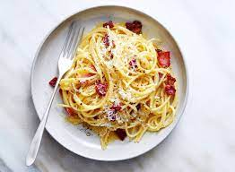

Spaghetti Carbonara

Description
This is my favorite pasta dish! My grandmother taught me how to make this and I have been making it consistenly
ever since. It is basicaly a spaghetti dish that has an egg and parmasan sauce with pieces of bacon in it.
Ingredients
- 2 whole eggs
- 1 egg white
- spaghetti
- parmasan
- heavy cream
- bacon
Steps
- Put a medium size pan on low heat
- Begin boiling water and salt it
- Cut bacon into small pieces
- Put a small amout of heavy cream on top of bacon
- Put pasta in boiling water
- Put eggs in small bowl with a generous amount of pepper and parmasan
- Whisk all ingredients together
- Set a sizeable amount of parmasean to the side for later
- Get a cup of pasta water and set to the side
- When pasta is finished and strained
- Mix the egg bowl with the pasta quickly in a cold bowl
- mix in bacon and parmasan
- add pasta water as needed